This tutorial focuses on DARLA, an online tool to facilitate automatic processing phonetic data, specifically for English vowels.1 I’ll walk you through the most common use cases, based on my experience using DARLA and what I’ve seen students do. There is more to DARLA than what I can show here, and I encourage you to explore its full capabilities once you’ve mastered the basics.
1 This tutorial comes about a decade later than it should have. I hope it can still be of use to new linguistics students.
I am not affiliated with the folks who created or maintain DARLA, but I have been using DARLA since soon after its release in 2015. In grad school, I processed many hundreds of files of all kinds, lengths, and qualities. I don’t know all the inner workings of DARLA, so what I present here is what I’ve been able to gather based on using it a lot.
1 What is DARLA?
DARLA is a website that has various sociophonetic data processing tools set up in a pipeline so that you can send files through various steps to get acoustic measurements. The various tools it uses are difficult to install for an average person, and even if you do have them on your computer, getting the output of one to feed nicely into the next is sometimes not a trivial task. DARLA does all the hard work of setting up the assembly line for you so that you don’t have to.
DARLA’s ultimate goal is to provide you a spreadsheet of acoustic measurements. Specifically, formant measurements at multiple points along the duration of each vowel in your audio file. Because some of the software that it uses are based on English, it only works on English data. And while some people have had success using DARLA for other varieties of English, you’ll have the best results when working with American English.
There are three main processing steps that need to happen to go from raw audio to a spreadsheet of formant measurements. First is transcription. We need to have a sentence- or utterance-level transcription of the audio, with timestamps, in regular English orthography. The timestamps are important. If you think about the closed captioning in a movie, it needs to know when to start showing a particular sentence and when to stop showing it. I suspect there’s a file somewhere under-the-hood of a DVD or streaming service that has a transcription file that has the sentence, the start time and the end time. Unlike closed captioning though, our transcription needs to be in a Praat TextGrid format (see Section 7.1 for more details). Regardless of how the transcription is done, it will help in DARLA’s ultimate goal of knowing the start and end points of each vowel in the audio.
Next, is forced-alignment. Using a software called the Montreal Forced Aligner (or MFA).2 3 This takes a sentence-level transcription and ultimately converts it to a word- and phoneme-level transcription. The way it does this is it’ll take every word in the transcription and look it up in a pronunciation dictionary. DARLA uses the CMU Dict.4 It’ll then convert your transcription into a quasi-IPA transcription called ARPABET (see the bottom of this page). The MFA then goes through its acoustic model, which knows what each speech sound is supposed to look/sound like in an audio file. For each utterance, it then does the best job it can at matching the audio to the string of speech sounds it’s expecting to find. It’s a somewhat complicated process, but you don’t need to fully understand it. The point is, at the end of forced alignment, MFA (and therefore DARLA) will provide you a version of your transcription that has every word and every phoneme aligned with start and end times.
2 Created by Michael McAuliffe, Michaela Socolof, Sarah Mihuc, Michael Wagner, and Morgan Sonderegger in 2017.
3 You can install MFA yourself, but it’s not as easy as other software.
4 Also available here
Finally, we have formant extraction. DARLA uses a software called FAVE to do this step. FAVE goes through the phoneme-level transcription that MFA provides, and looks at each vowel. For each one, it’ll extract a whole bunch of acoustic measurements and save them into a spreadsheet. In the end FAVE (and therefore DARLA) will provide you with that spreadsheet, which you can use for whatever you want, including processing in Excel or some statistical software.
You can do all these steps yourself manually if you’d like, but as old-school sociophoneticians know, that takes forever. You can also install these pieces of software yourself and do it completely offline if you’d like too, but it takes a bit of computer know-how to get that going. Or, you can upload your files to DARLA and with a few clicks, have it do the hard work of sending it through those three processing steps!
The main pipeline is transcription → forced alignment (with MFA) → formant extraction (with FAVE). DARLA lets you jump into the pipeline at any point. You can choose to do all three, just the last two, or just the last one. And with transcription and forced alignment, it offers a few options on how to do it.
1.1 How this tutorial will work
What do you need in order to use DARLA? Well, it depends on how much automatic work you want to do. For the rest of this tutorial, it’ll be a bit of a choose-your-own-adventure book.
If all you have is an audio file and you want DARLA to do transcription, forced alignment, and formant extraction, go to Section 2.
If you have a transcription of your audio, and want to do forced alignment and formant extraction, go to Section 3.
If you have a force-aligned transcription of your audio already and all you need to do is run FAVE to get formants, go to Section 4.
Regardless of where along the pipeline you are, many of the options that DARLA presents to you to customize the processing are the same, so I’ve included Section 5, which has further instructions that apply regardless of what method you choose. If you run into trouble, see Section 7.
2 Completely Automated Vowel Extraction
If you’ve got an audio file and are excited to get some quick-and-dirty results, you can send it through DARLA’s completely automatic pipeline. This will automatically transcribe your data using one of two speech recognition systems, and then send it off for further processing.
2.1 DARLA’s in-house transcription system
The first of the two methods is DARLA’s in-house speech recognition system. You’ll be presented with this interface, which is typical of all DARLA’s interfaces:

First, it’ll ask you to upload a sound recording. They recommend audio files at least two minutes long, but it will run on slightly shorter files, although I don’t know what kind of effect that has on the output. As for the next thre questions about filters, see Section 5.1. Once you’ve filled out that page and hit “submit”, you can jump to Section 5.2.
Regarding DARLA’s in-house transcription, they say that it’s not a particularly good model and is really only intended to reliably transcribe the stressed vowel. It’s a model based on 400 hours of speech, but compared to contemporary speech-to-text methods, it doesn’t fare particularly well. They say in their write-up that it has a 42% word-error rate and a 9% stressed vowel error rate once you’ve filtered out some of the bad measurements. If all you’re interested in are average positions of vowel categories, you’re probably okay trying it out, but for anything beyond that and I would start to think about providing your own transcription rather than have DARLA doing it.
Only use DARLA’s in-house speech recognition system if you want to get a very rough look at some vowel formants. Don’t rely on it for any serious analysis of vowels.
2.2 Bed Word
The other option for completely automated transcription in DARLA is to use a third-party software called Bed Word. This is a relatively new option (around 2023) and works on more than just English.
Bed Word is the brainchild of Marcus Ma, a then-undergraduate at Georgia Tech. He noticed that there are decent speech-to-text systems out there, but linguists hardly use them because the output they return is in a format that’s not particularly easy for linguists to work with, especially for subsequent acoustic analysis. So, with the help of Lelia Glass (a linguist at Georgia Tech) and Jim Stanford (who maintains DARLA), Ma took the Deepgram model and incorporated it into a pipeline that gives a Praat TextGrid instead of some other format. I had the opportunity to meet Ma and try out Bed Word before it went live and I was impressed with how good it was!
This is not the first time linguists have incorporated third-party transcription models into linguistic analysis pipelines. DARLA used to have another option that involved sending the audio through YouTube’s closed captioning service. And in 2018, linguists at the University of Washington (Alicia Wassink, Rob Squizzero, Campion Fellin, and David Nichols) introduced CLOx, which involved using Microsoft’s speech-to-text system. These let users leverage the power of models created by companies with far more money and resources than what linguists have, but in sort of a backdoor sort of way. The difference here is that Bed Word is incorporated into DARLA, and the output can be sent on to subsequent processing steps all in one go, which makes it even more convenient.
Because Bed Word uses a third-party software, there’s a small bit of work involved when getting started fo the first time. DARLA gives some instructions on how to do this, which will involve creating an account through Deepgram. Using Deepgram (and therefore Bed Word) is technically not free, but at the time of writing in February 2025, you get $200 of free credit, which is far more than what you’d need if you’re a casual user of DARLA. So, you shouldn’t have to worry about paying for this service.
If you select this option, you’ll see a screen that looks like this:
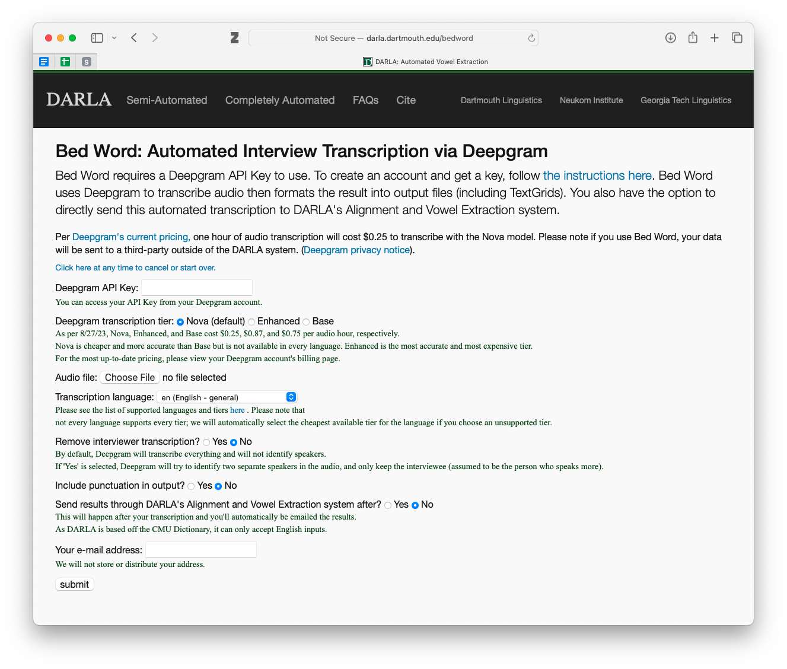
There are more options than the in-house transcription. I honestly don’t use Bed Word too much, so I can’t offer additional insight into these options other than what DARLA has on that webpage. I encourage you to read through the explanations carefully. The main one you’ll want to pay attention to is the last one. If your data is in English and you want to get formant measurements and a vowel chart, check this box so DARLA will send your files down the rest of the pipeline.
Once you’ve filled out the entire page and hit “submit”, see Section 5.2 for what to next.
Bed Word is pretty good. If you plan on processing multiple files with DARLA, and you don’t have other feasible options for transcribing your audio, it’s worth it to get your Deepgram account set up and to use it for transcription.
3 Semi-Automated Alignment and Extraction
Automated transcription is great, but it introduces errors and uncertainty into your analysis. If you have the time and resources to do so, it is better to provide DARLA a transcription of the audio. There are several ways to do this.
You could transcribe your audio manually using Praat, ELAN, or some other software. This is very time consuming but it is likely the best option if you are concerned about accuracy. It’s a bit of a rite of passage for some linguists (here are my thoughts when I finished transcribing my dissertation data) and there’s no better way to really get to know your data than to listen and trascribe every second of it. If you’re doing just one audio file, manual transcription shouldn’t take too long.
If you don’t have the time or resources to do a full manual transcription, you can try correcting an automatic transcription. There are tons of free or paid transcription services and software that you could use, including Bed Word via DARLA. The problem though is that the output might not be in a format that can be processed by phonetic software like DARLA (i.e. a Praat TextGrid). And if the automatic transcription is not very good, you might spend just as much time correcting as you would have just transcribing it yourself.
Regardless of how you get your transcriptions, in order to use the semi-automated option in DARLA, you’ll need a transcription of your audio file. The format of that transcription will determine which option you use.
3.1 A TextGrid transcription
Probably the most typical way of using DARLA is to provide it with a transcription in the form of a Praat TextGrid.5 This is the method recommended by DARLA. Here are the instructions that DARLA provides when prepping your TextGrid.
5 It is beyond the scope of this tutorial to explain what a TextGrid is or how to prepare one. I do however have a Praat basics tutorial, which includes how to create TextGrids. You can also watch Jim Stanford’s YouTube video on how to prepare a TextGrid for DARLA.
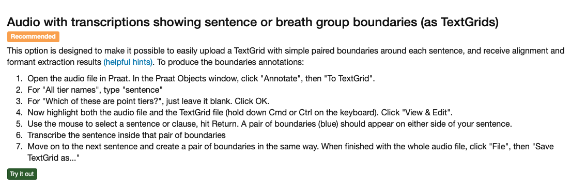 I also have some tips on how to prepare your TextGrid in Section 7.1, including a screenshot of what a properly prepared TextGrid looks like.
Once you’re prepared your TextGrid using DARLA’s instructions and you’ve gone through my tips, you’re ready to go. Here’s the screen you’ll see:
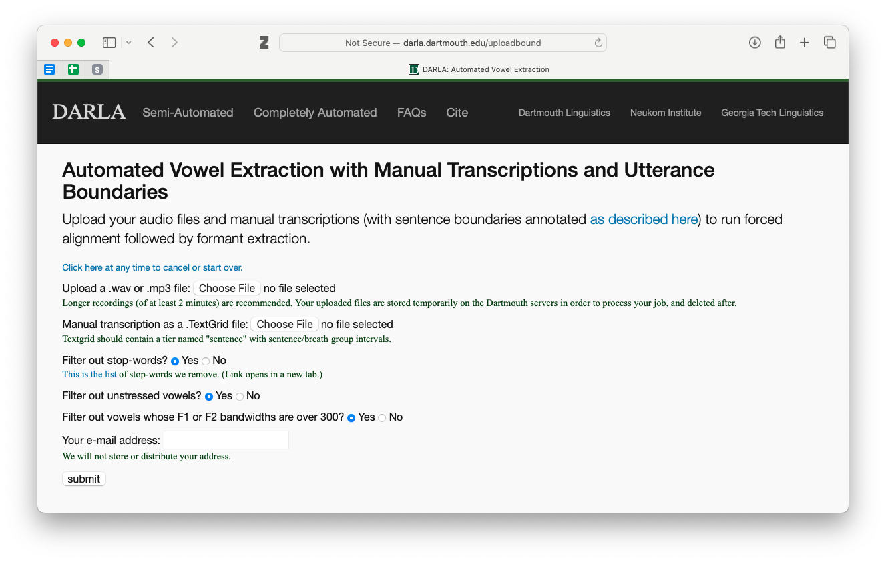
You just need to upload your audio and your transcription file. For the filtering options see Section 5.1. Once you hit submit, see Section 5.2.
I agree that this is the best way to use DARLA. It takes time to get the transcriptions you need, but the output is usually very clean.
3.2 A plaintext file
The alternative to using a TextGrid is to upload your transcription as a “plaintext” file. If you’re not even sure what this means, here’s what that would look like:
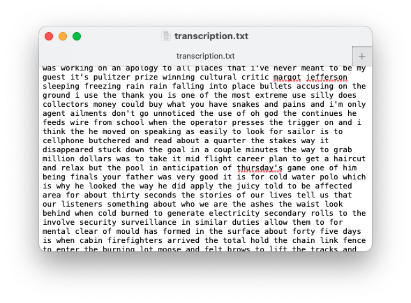
It’s not pretty, but the content is all there. It’s kind of like a TextGrid transcription but without any timestamps. You might get this if you use a third-party transcription service that does not have linguistic data processing in mind.
DARLA has some instructions on how to prepare for this method, which involves removing extraneous noise from the audio file itself:
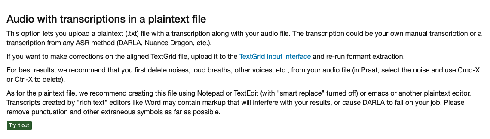
The last tip references the “smart replace” option (or something similar) that a lot of word processors have. See Section 7.1, specifically the part about curly quotes, to get a little more clarification on what that means.
The interface for this looks simliar to what was seen with the TextGrid transcriptions. Simply upload your audio and transcription file. See Section 5.1 for what to do about the filtering options and see Section 5.2 for what to do once you hit the “submit” button.
I don’t recommend this option for a few reasons. DARLA has to work harder to get an accurate transcription. With a sentence- or utterance-level transcription, DARLA only needs to scan a few seconds of speech and match up a few dozen speech sounds to the audio. With a transcription like this without timestamps, DARLA has to scan the entire audio file and look through hundreds or thousands of speech sounds to match them up. It’s far more prone to error this way, even on pristine audio.
Another reason I don’t recommend it is because extraneous noise and speech errors complicate things. The transcription needs to match exactly what the person says, so DARLA recommends you remove things like loud breaths and other voices. You also need to remove things like false starts or stutters. And since we’re used to tuning those things out, you’re likely going to miss some. To me, this takes a lot of work—perhaps as much as just doing a transcription—and is still prone to error. One single “um” that you forgot to transcribe might throw off the entire transcription. It also means you’re no longer working with the original audio, which makes reproducibility difficult.
I can’t think of a good reason to use this option unless the transcription file you’re provided is in this format. Even then, I would try to create a Praat TextGrid with what I have to make processing less error-prone.
4 FAVE only
The last option for DARLA is to just have it extract formant measurements, given an already force-aligned TextGrid. You might need to do this if you have MFA installed on your computer already and just need to run FAVE. Or perhaps you took the MFA output that DARLA provides and made some corrections and want to get an updated spreadsheet of formant measrurements based on those updates.
This option is the last on the page of “semi-automated” options and the interface looks basically the same as all the others we’ve discussed above. Once again, see Section 5.1 for more detail on the filtering options. Once you hit submit, see Section 5.2.
You should know that DARLA has a tool to help look at the quality of transcriptions. In all my years of using DARLA, I’ve actually never used this feature. It may be helpful for you if you need to compare two different transcriptions, but I unfortunately can’t offer any advice.
5 Further instructions
The sections below apply to multiple DARLA options, so I’ve put them here instead of integrated with the above walkthroughs so that I don’t have to repeat myself too much. You should have been linked to these sections already if you’re doing a walkthrough.
5.1 The filtering options
In pretty much every uploading interface in DARLA, you’ll be presented with three filtering options: stop-words, unstressed vowels, and bandwidths:
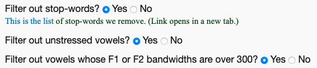
Let’s go through each of these:
stop-words: This refers to the most common words in English. There are numerous lists of stopwords, so there’s no hard-and-fast rule for what is considered a stopword and what is not. DARLA’s list is relatively small. The reason why you’d want to remove stopwords is because they tend to be phonetically reduced. Because they’re so common, we tend not to say them with full vowel qualities as we might with other words. Some researchers are not interested in that kind of phonetic reduction, so they often remove stopwords from analysis because it arguably gets in the way of the patterns they hope to find.
unstressed vowels: In English, unstressed vowels tend to be schwa-like or otherwise reduced. Many sociophoneticians are not interested in unstressed vowels and instead focus on the vowel quality of stressed vowels. So, you can filter those unstressed vowels out so you don’t have to worry about them.
bandwidths: This is a way to kinda measure the quality of audio at the moment the vowel formant measurements are taken. Without getting into the nitty-gritty of it, a larger bandwidth just means that the sound quality is probably not great, which means the formant estimation will be less reliable. Marinaccino, Shapp, & Singler (2021) is the only study I’ve seen that analyzes bandwidths directly, and they find that checking this box gives you a little less data but overall doesn’t affect the results all that much. Of course, it depends highly on the audio quality: this will filter out many more vowels from digitized cassette tapes than from audio recorded in a sound booth.
For what it’s worth, these filtering options are not an original feature of DARLA, but I’m glad they’re there.6 I personally say “no” to all of those boxes so that I can be in control of the filters. For example, I use a different set of stopwords than what DARLA uses.7 Ultimately, whether you use those filters is up to you.
6 I’m pretty sure they were added was because my team at the University of Georgia requested the option to opt out of those filters so that we could have greater flexibility in how we filter our data.
7 I typically use the one called “marimo” from the stopwords R package.
If you are just getting started with sociophonetic analysis, say “yes” to all three of those filters.
If you are competent at sociophonetic data analysis, say “no” to all three of those filters.
5.2 Enter Speaker Information
Once you’ve filled out all the information on the form and hit the “submit” button, you’ll have to wait a minute or longer for your files to upload. If you’re working with large, uncompressed .wav files, it might take several minutes, depending on your internet connection. If you’re working with shorter .mp3 files, it might be only a few seconds. Don’t close the webpage just yet! You’ll need to wait until it’s fully uploaded, and only then will a couple new menu options appear that will prompt you to give the Speaker ID and their “Voice Type.”
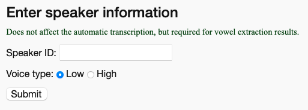
The Speaker ID is just whatever ID you use to refer to that speaker in your own records. If you’re doing just a one-off analysis of your speech or something, just put your name. If it’s part of a larger project, you can use the unique identifier (UT001-Joey or whatever).
For the Voice Type, this determines a setting in FAVE’s formant extraction. Typically, you’d use the “Low” option for men or taller people, and the “High” option for women and shorter people. But it’s not a precise setting, so if your data comes out looking messier than you expect, try resubmitting it with the other option and see if it works better.
Once you’ve hit “submit” this second time, you’re good to go. You are now free to close that window and you should get an email confirmation saying the process has started. See Section 6 for more detail on what you do once DARLA has started processing your files.
If you plan on submitting multiple files to DARLA simultaneously in multiple tabs, it’s important to note that when you see this “Enter speaker information” part of the screen, the rest of the form resets. So, you won’t see the name of the audio or TextGrid you submitted. This is normally not a problem for the one-off file, but if you’ve got, say, five open DARLA tabs, you might forget which one had which files uploading. There were many times in grad school where I forgot which file was uploaded in that tab, and I ended up writing down the wrong speaker ID and selecting the wrong voice type, which means I had to process it all over again.
My first recommendation is to limit the number of simultaneous uploads to about five otherwise it might cause DARLA to crash for all of them. See Section 7.2.2.
My other recommendation is to simply have a piece of paper handy and write down the names of the files you’re processing. Once you’ve submitted the speaker ID and voice type, you can cross off that speaker, close that tab (which moves all other tabs to the left), start a new DARLA tab all the way to the right, and write down that speaker. You then wait for the next one to finish uploading (they may not be ready in the order you submit them because of file size differences) and repeat the process, always carefully noting the order you submit them and crossing things off when you’re done. The highest uncrossed-out name on the paper corresponds to the leftmost DARLA tab. This technique has the added benefit of making it clear what files still need to be processed, reducing the accidental submission of the same file twice.8
8 I often had to process dozens of files in a single setting, and this technique worked for me. If you ever walked past my desk in grad school, you probably saw tons of little sheets of paper with speaker IDs organized in neat columns with all but the bottom five or so crossed out.
6 DARLA’s output
If everything goes well, you should get two emails from DARLA. The first comes a few moments after you’ve submitted your files. It is just a confirmation to let you know that the processing has started. The second comes a few minutes later (perhaps up to 20 minutes) and contains five files for you. Let’s look at those individually.
formants.csv: this is the whole reason you used DARLA. It contains all the formant measurements for the entire file. Unfortunately, it’s out of the scope of this tutorial to go through that file in depth, but I hope to have a separate tutorial on that soon.
formants.fornorm.tsv: this is the same data as in formants.csv, but it’s formatted in a specific way so that it can be read in by an online tool called NORM. That site is used for normalizing vowel formant data. If you’re not sure what that means or how to use NORM that’s okay—it’s a bit of an outdated tool nowadays anyway. I usually do nothing with that file.
some sort of .TextGrid file: this is the word- and phoneme-level transcription provided by MFA.
transcription.txt: This contains just the text of the transcription file. This is useful in case you want to create a text corpus of your audio files. This file can easily be read into a program like AntConc.
plot.pdf: A basic vowel plot of your data. I have some issues with this plot because it’s often a bit misleading. All vowels are averaged across the entire dataset to get these points, but the problem is it includes things like prerhotic and prenasal allophones which can throw everything off. If you don’t have any other data processing skills, this plot is the best you’ve got. (Stay tuned for an online tool I’ve created to help with creating interactive vowel plots based on DARLA data for people who don’t have coding skills!)
Once you’ve got those files, you’re good! Save them in a place that makes sense, probably in the same folder with the audio and original transcription or maybe in a separate subfolder called “DARLA.”
7 Troubleshooting
I have prepared hundreds of files for DARLA, so I’ve seen what works and what doesn’t. In this section, I give some advice to help you prepare your files for DARLA. You should also look at DARLA’s Helpful Hints page and watch Jim Stanford’s YouTube video on how to prepare Textgrids.
As of writing in February 2025, this section is very much incomplete. I’ll try to add to it when I can.
7.1 Preparing TextGrids
Here are a few tips you should keep in mind when preparing your TextGrids to reduce the likelihood of DARLA crashing or otherwise being unable to process your file.
Make sure the tier you want to be transcribed by DARLA is called “sentence”.
Don’t use digits in the transcription. So, type “nine” instead of “9”. This applies to dates and years too. For years, this is actually important because DARLA (well, technically MFA) won’t know whether “2017” is “twenty-seventeen” or “two thousand seventeen.” It might be unnatural to type those out, but it makes for a more accurate transcription and it’ll prevent some errors when processing it with DARLA.
Don’t use curly quotes and apostrophes. To understand what I mean by that, I’ll need to get into some typographical detail, but it’s important. Every time you type the apostrophe or double-quote character, there’s a possibility that it’ll convert into a curly quote character. Here is a straight apostrophe (
') and double quote (") and here are curly apostrophes ( ‘ ) or ( ’ ) and curly double quotes ( “ ) and ( ” )9. Not all software does this conversion automatically—Praat and ELAN do not—but if you’re copying text over from Microsoft Word or some other program, it’s likely that there are curly quotes in there. You should care about this because DARLA will crash if it encounters a curly quote character! So you’ll need to learn to spot them and change them back to straight quotes before uploading it to DARLA.Avoid very short intervals.
Avoid including sharp intakes of breath in a transcribed interval. DARLA may think it’s an [h] sound which could mess up the rest of that interval. So, even if it’s mid-sentence, end an interval before the breath and start a new one after it. (In general, the way to exclude something from being analyzed in DARLA is to simply put it in an empty interval.)
9 For more information about quotes, see Butterick’s Practical Typography.
Here is an example of what a TextGrid prepared for DARLA looks like:
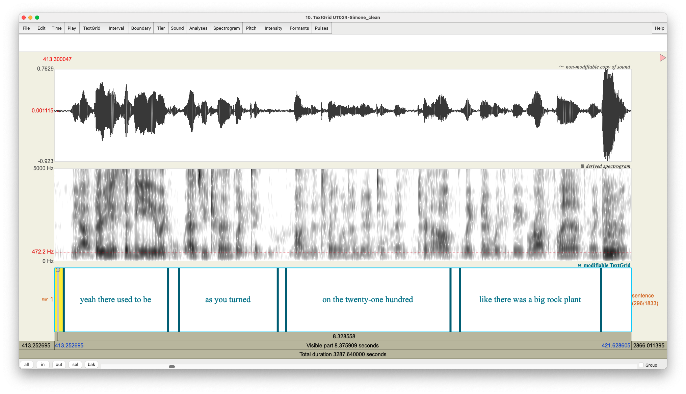
Here, you can see I have just one tier and it’s called “sentence”. You can add more tiers if you want (and you probably should if you want to transcribe additional people, make a note of extraneous noise, or have other annotations), but DARLA will ignore it. Notice that the number is spelled out. And notice at the very end a loud sound (it was the interviewer saying something like “mm” as some verbal feedback). To have DARLA ignore it, I just left that interval blank.
7.2 What to do if DARLA crashes
If you use DARLA, you will likely experience it crashing. It is, unfortunately, not an uncommon occurrence. In this section I go through some of the error messages you might see and how to maybe fix things so they’ll work with DARLA.
7.2.1 A terrifying error page
DARLA can crash in a variety of ways. Sometimes it’s a full-screen error page that is terrifying to some people.
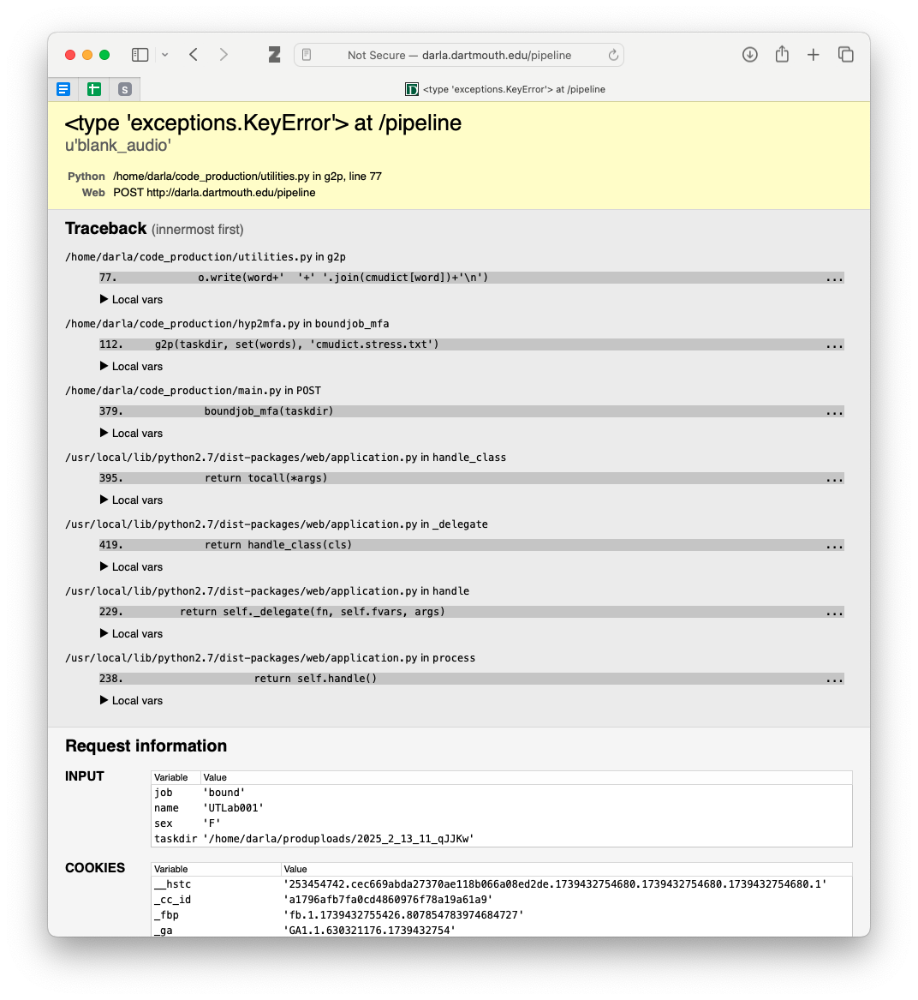
In my experience, the most common reason this page shows up is because there’s some sort of special character in the transcription. This may be a curly quote, punctuation mark, or anything that is not normally used in English orthography. To force this page, I actually added an é to an otherwise good transcription.
Fortunately, while this page is scary, DARLA now sends you an email with specifics on where the problem occurred.10 Here’s what my email looked like:
10 I only discovered this today when I purposely triggered that error page! It must be a relatively new feature!
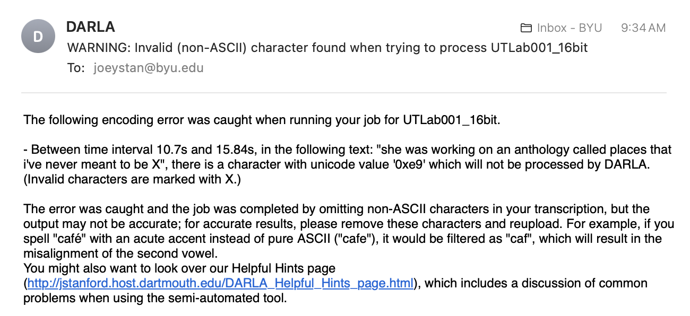
Here it gives very specific information about where the error occurred (between 10.7 seconds and 15.84 seconds into the transcription). It then gives the transcription of that interval, with the problematic character replced with “X”. The character’s unicode value is provided (“0xe9”), which you can google to hopefully get an answer about what it is. That information is exactly right: here’s the relevant section of the TextGrid:
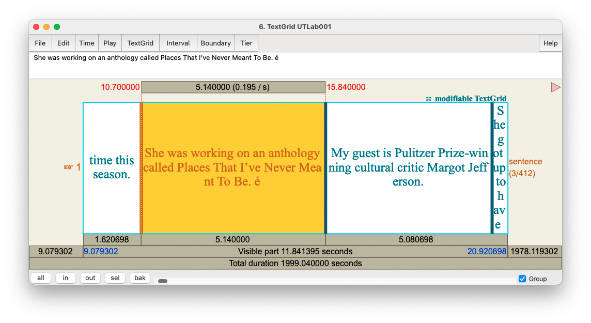
As you can see, there’s an é exactly where DARLA said it was! So, if you get an email like this, you can hopefully use it to find where the problem occurred and fix the special character.
7.2.2 A generic error email
Other times you’ll simply get an email saying DARLA failed:
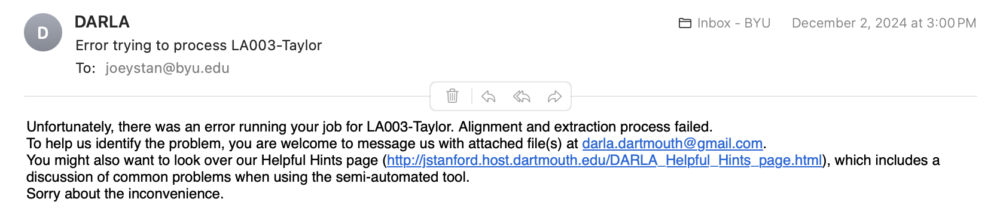
This is, rather unfortunately, not a particularly helpful error message because it doesn’t say at all what the problem might be.
My recommendation is to just try submitting it again, possibly a third time. I have noticed that DARLA crashes if there are too many files in line to be processed at once.11 So if you submit many files all in a row, try spacing them out.12 If you happen to submit around the time other people are doing so, wait a few minutes or maybe try again later.
11 I’ve made the mistake of having 25 students all try to submit files to DARLA during class. A few lucky ones got their files, but the rest all got error emails. I tell them to just continue trying several times until it goes through and usually everyone eventually is successful. Apparently, getting 25 submissions all at once overwhelms DARLA.
12 In grad school, I found that I could submit about four or five files at once without them crashing. As soon as I got the results of one, I would then submit the next one so that I never had too many going at the same time.
If that doesn’t work, please visit DARLA’s Helpful Hints page. It lists may possible reasons why your file isn’t working. Some are just double-checking to make sure things are prepared properly. Other hints involve a bit of work, like the “divide and conquer” solution.
8 Conclusion
As far as where to go from here, well, that’s the next step in sociophonetic data processing! If you want to learn to make your own vowel plots, I have a tutorial that walks you through how to do so, and it’s even based on a DARLA-generated spreadsheet! For all other data processing, try to find books, websites, or advisors who can help you go from there.